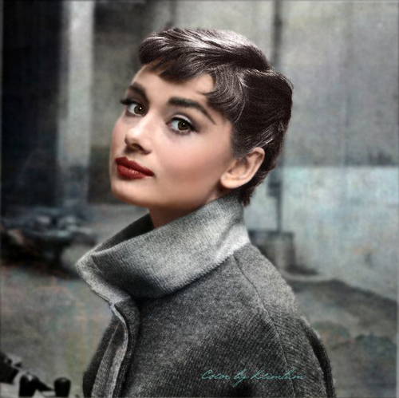
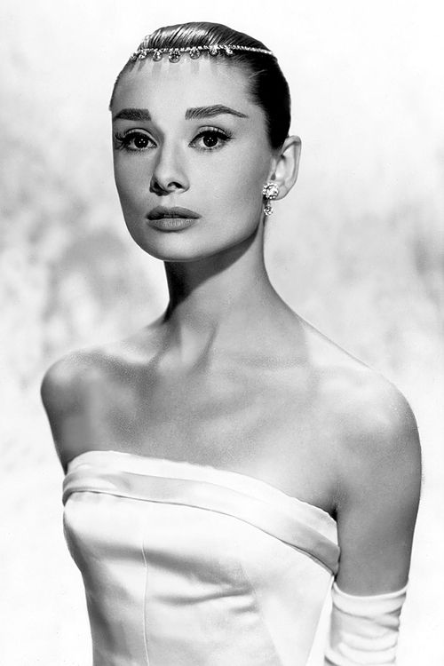
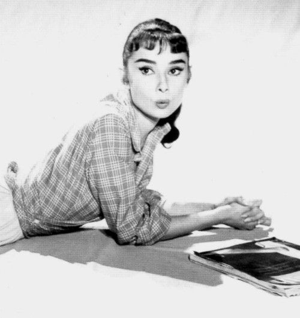
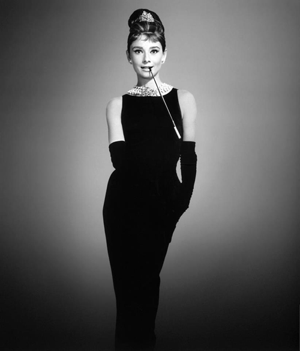
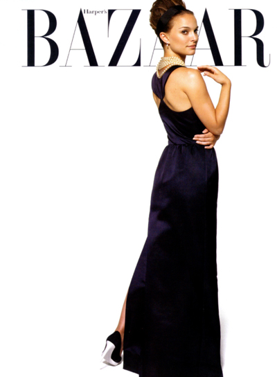
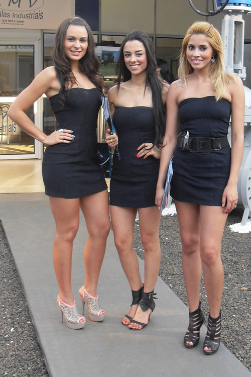

Style Icon
Audrey was noted for her fashion choices and distinctive look, to the extent that journalist Mark Tungate has described her as a recognisable brand. When she first rose to stardom in Roman Holiday (1953), she was seen as an alternative feminine ideal that appealed more to women than to men, in comparison to the curvy and more sexual Marilyn Monroe, Grace Kelly and Elizabeth Taylor. With her short hair style, thick eyebrows, slim body and "gamine" looks, she presented a look which young women found easier to copy than those of more glamorous film stars. (Source: https://en.wikipedia.org/wiki/Audrey_Hepburn, retrieved on 22 September 2016)
  The "Little Black Dress"
The black Givenchy dress of Audrey Hepburn is a little black dress designed by Hubert de Givenchy and worn by Audrey Hepburn in the opening of the 1961 romantic comedy film Breakfast at Tiffany's. The dress is cited as one of the most iconic items of clothing in the history of the twentieth century and perhaps the most famous "little black dress" of all time.
The little black dress attained such iconic fame and status that it became an integral part of a woman's wardrobe. Givenchy not only chose the dress for the character in the film, but also added the right accessories to match the long gown in the form of a pearl choker of many strands, a foot long cigarette holder, a large black hat and opera gloves which not only "visually defined the character but indelibly linked Audrey with her". (Source: https://en.wikipedia.org/wiki/Black_Givenchy_dress_of_Audrey_Hepburn, retrieved on 17 September 2016)
The dress is cited as one of the most iconic of the 20th century and film history. It has been described as "perhaps the most famous little black dress of all time" and exerting a major influence on fashion itself by directly making it popular.
 Makeup Looks
Audrey's iconic eyebrows have inspired many people to create a "makeup look". Not only her eyebrows, but her beehive hairstyle and flawless skin have been idolized by many celebrities as well.